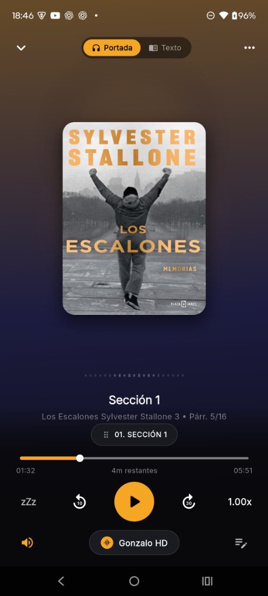
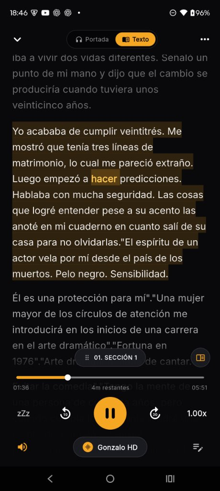
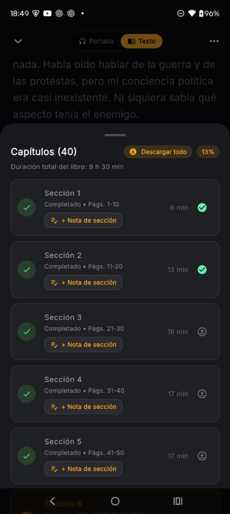
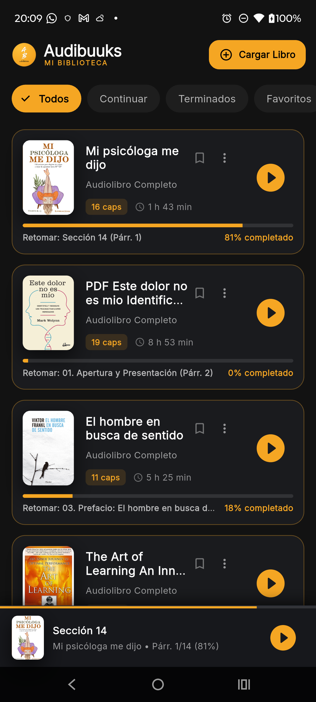

0 suscripciones, 0 anuncios
No tenés que pagar membresías mensuales ni comprar libro por libro. Si ya tenés el PDF o el eBook, lo cargás y lo escuchás al instante gratis.
No hace falta pagar Audible ni suscripciones mensuales. Cargá cualquier libro o apunte en PDF o EPUB, escuchalo con voces naturales, guardá notas en cada sección, descargá para viajar sin internet y traducí libros en inglés al español con un toque.


No tenés que pagar membresías mensuales ni comprar libro por libro. Si ya tenés el PDF o el eBook, lo cargás y lo escuchás al instante gratis.
Caminando, viajando en colectivo, entrenando o antes de dormir: convertí tus horas libres en lectura real con voces naturales y música suave de piano.
¿Escuchaste una frase clave o algo para estudiar? Abrí la nota de esa sección, guardala con colores y tené todos tus resúmenes ordenados capítulo por capítulo.
Tocá cualquiera de las pantallas de abajo para explorarla en detalle: portada dinámica, lectura palabra por palabra, lista de capítulos con notas y biblioteca.


Modo Portada: muestra la tapa de tu libro con un fondo ambiental que toma los colores de la portada, barra de progreso del capítulo, temporizador de sueño (zZz), velocidad y cambio rápido de voz.
Cuando cargás un PDF o EPUB en inglés, Audibuuks lo detecta automáticamente y te pregunta si querés traducirlo al español o escucharlo en su idioma original. Empieza a narrar enseguida mientras traduce el resto en segundo plano, y podés alternar entre inglés y español cuando quieras.
"Success is the product of daily habits—not once-in-a-lifetime transformations."
"El éxito es el producto de los hábitos diarios, no de transformaciones que ocurren una sola vez en la vida."
Pensada tanto para disfrutar novelas como para estudiar apuntes de la facultad o leer libros técnicos sin gastar un peso.
Elegí entre 13 voces naturales de Argentina, México, Colombia, España, EE. UU. y Reino Unido. Ajustá la velocidad de 0.7x a 2.0x según tu ritmo.
Seguí la lectura palabra por palabra o abrí tu PDF original con buscador, zoom a una mano, vista en cuadrícula de páginas y modo Sepia o Noche.
Descargá capítulos sueltos o el libro entero rapidísimo incluso con la pantalla apagada. Ideal para el colectivo, subte, ruta o avión.
Importá tus PDF y EPUB en segundos o pegá un enlace compartido de Google Drive (incluso libros grandes de más de 100 MB) y elegí o cambiá la portada cuando quieras.
Acompañá tus libros con música clásica suave de fondo, guardá notas con colores en cada sección y programá el apagado automático para dormir.
Cuando salen mejoras, Audibuuks te avisa directamente en tu Biblioteca. Tocás "Actualizar ahora" y se instala encima sin borrar tus libros ni notas.
Diseñada para que nunca te quedes trabado a mitad de un capítulo ni tengas que reiniciar la app.
Voz clara y potente desde el primer segundo, equilibrada automáticamente con la música de fondo para escuchar cómodo en la calle o en casa.
Descarga varios párrafos en simultáneo y va preparando lo que sigue adelante tuyo para que no haya pausas entre frases.
Recuerda el segundo exacto donde dejaste cada libro y guarda cada palabra de tus notas al instante.
Guardá el teléfono en el bolsillo y controlá pausa o avance desde la pantalla de bloqueo o tus auriculares Bluetooth sin cortes.
Voces cálidas y expresivas en español de Latinoamérica y España, más voces nativas en inglés si preferís escuchar en idioma original.
Todo lo mejor de un lector de libros y un reproductor de audiolibros, usando tus propios archivos y sin pagar suscripciones.
| Lo que necesitás | Audibuuks | Audible / Apps pagas | Lectores PDF comunes |
|---|---|---|---|
| Usar tus propios PDF, eBooks y apuntes | ✓ Ilimitados (celular y Google Drive) | No te dejan subir tus libros | Solo lectura visual o voz robótica |
| Traducir libros en inglés a audiolibro en español | ✓ Automático con 1 toque | No incluido | No incluido |
| Escuchar sin internet en cualquier viaje | ✓ Descargá capítulos o libros enteros | Solo pagando suscripción | No incluido |
| Notas por sección + karaoke palabra por palabra | ✓ Todo integrado en la app | Sin notas por sección en PDF | Muy limitado |
| Precio mensual y publicidad | ✓ 100% Gratis · Sin anuncios | Suscripción mensual en dólares | Anuncios o funciones bloqueadas |
Funciona en prácticamente cualquier celular Android. A partir de esta versión, las próximas actualizaciones te llegan solas dentro de la app.
Presioná el botón dorado de arriba para bajar el instalador oficial de la última versión (pesa solo ~22.5 MB).
Tocá el archivo descargado en tus notificaciones. Si Android te pregunta por primera vez, activá "Permitir desde esta fuente" y dale a Instalar.
Elegí un PDF o EPUB de tu celular (o un link de Google Drive) y escuchalo al toque. Cuando haya versiones nuevas, la propia app te avisa para actualizar en 1 clic.
• Volumen de voz potenciado y mucho más claro (ya no hace falta subir el celular al máximo para escuchar). • Portadas exactas en PDF y EPUB (toma la página 1 real y además podés elegir cualquier página o foto de tu galería). • Nuevo aviso automático de actualizaciones dentro de la app (sin perder tus libros ni tus notas). • Descarga de capítulos para escuchar sin internet hasta 5 veces más rápida y reproducción estable sin cortes.
Audibuuks nació con el objetivo de acercar la lectura y los audiolibros a todo el mundo de forma gratuita: para estudiar, leer novelas o entender libros en inglés sin depender de plataformas pagas como Audible.
Sí. Audibuuks es 100% gratis, no tiene anuncios y no te cobra por libros ni por horas de escucha. Subís tus PDF, EPUB o apuntes y los escuchás al instante como un audiolibro profesional.
Sí. Apenas cargás un libro en inglés, Audibuuks lo detecta solo y te da la opción de traducirlo al español para leerlo y escucharlo con voces en español. Además podés volver al inglés original cuando quieras con un solo toque.
Sí. Tocá los 3 puntitos en cualquier libro de tu biblioteca y elegí Cambiar portada: podés seleccionar cualquier página de tu PDF, subir una foto de tu galería o buscar la tapa oficial online.
Para nada. Al actualizar, todos tus libros, notas de estudio, capítulos descargados y el segundo exacto donde dejaste de escuchar quedan intactos.
Sí. Podés descargar capítulos sueltos o el libro completo con un toque desde la lista de capítulos para escuchar en el colectivo, subte o avión sin usar datos móviles.